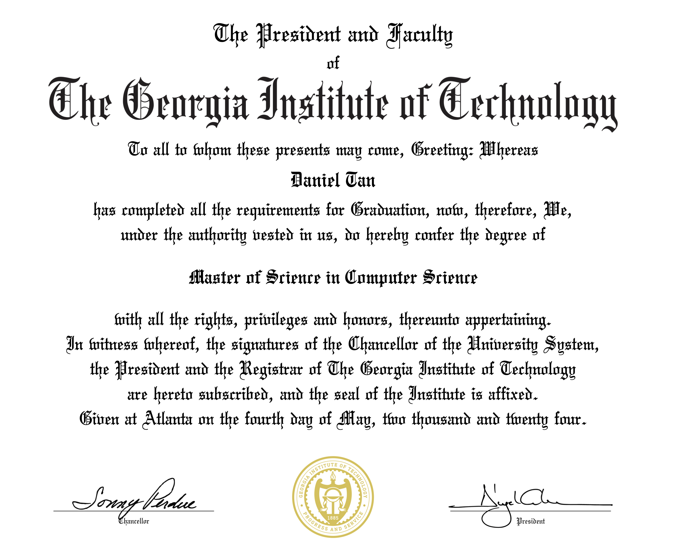

My Georgia Tech OMSCS Review
I got out!

After a challenging 3+ year journey, I am finally proud graduate of the Georgia Tech Online Masters of Computer Science (OMSCS) program (Go Jackets!). I could not have completed this programme without the support of my amazing wife, family, and fantastic colleagues, mentors and managers. It is an ongoing tradition that graduates of this programme share their reflections and tips, so as I bask in the post-graduation glow, here’s mine to pay it forward.
Georgia Tech Online Masters of Computer Science (OMSCS)
If this is the 1st time you have heard of the OMSCS, here’s a quick primer. The landscape for online Computer Science Masters programs is very competitive. There is a large market of potential students, many of which are already mid career professionals who are attracted to furthering their education without committing to an in-person programme, and from my observation, this market has only gotten larger since COVID. There are many institutions of higher learning that offer online masters programmes, but Georgia Tech was one of the pioneer programmes. More importantly, I strongly believe that Georgia Tech remains one of the top choices for students from all walks of life.
When I first applied back in June 2020, I was primarily drawn to the program’s rigorous yet structured curriculum. Like many data scientists of my generation, I had transitioned into this field from an adjacent domain (Operations Research was my thing). Back in those days, Data Science as a job didn’t even exist – at least not in the way we know it now, thanks to that famous HBR article. Like many Data Scientists from my generation, learning the tools of the trade was primarily fueled by constant self-learning from a hodgepodge of resources such as papers, textbooks, blog posts, and good ol’ StackOverflow threads. This environment gave me a lot of confidence in my ability to keep scrappily learn and apply new concepts on my own.
But I couldn’t shake the feeling that a structured, proper Master’s program could take my knowledge to new heights. Yet as a busy professional myself, a full in-person learning programme was not very attractive to me. So like thousands of other students in my position, the OMSCS was the perfect option that checked all my boxes.
Things that really surprised me about the course
When I enrolled in Georgia Tech’s Online Master’s in Computer Science (OMSCS) program, I knew I was in for a challenging but rewarding experience. However, there were a few things that genuinely surprised me along the way.
1. How applicable some courses are
I took the most common specialisation - Machine Learning, and as you can imagine, there were many courses that covered technologies that are directly related to my day-to-day. However, there were also many courses that proved to be incredibly valuable.
The biggest surprise? Human-Computer Interaction (HCI) ended up being my favourite course in the entire program. Going into HCI, I thought the course would simply help me understand what all the fuss with UX and product design was about. Little did I know, I’d gain practical skills for guiding a product from prototype to final form.
The course changed the way I approach design decisions with a user-centred mindset. The course equipped me to be more purposeful about when to create a low or high fidelity prototype and much more aware of the affordances that each design decision adds and takes away from my final product.
🙂 I’m still a work-in-progress but I feel a lot less inclined to create apps with 5 drop downs and 10 radio buttons.
2. The rigour
With 10 courses required for the degree, you expected varying levels of quality and depth. More often than not, I was surprised by the depth of the preparation and challenging nature of the materials.
One course that stood out was Simulation and Modeling for Engineering and Science. I have a good foundation and personal interest in Calculus, Probability and Statistics, but I was taken aback when I found myself having to relearn how to derive proofs by hand – a steep but rewarding learning curve. This course pushed me beyond my comfort zone in a way that I know my previous path of self-study would not have. Before I knew it, I started to get really into the topics and was even inspired me to write an explainer on the Inverse Transform Theoremthat received some recognition in the Summer of Math Exposition(SoME) contest!
3. The price
I’ll keep this point short. One of OMSCS’s most attractive features is its price point and somehow in the middle of 2022, it got even more affordable. It truly is incredible how OMSCS continues to deliver a quality experience while bringing down financial barriers to entry.
What I Think Can Be Improved
I am a big proponent of balancing the good and the bad. Here are the things that I think the programme can improve upon.
1. Variance between courses for workload
Naturally, there is variation between courses but I can’t help but feel that variance is too large. OMSCentral is a platform that crowd sources reviews from students who have completed the various courses in the programme, and the distribution of average number of hours per week (Workload) ranges between 2 to 50+ hours. That is an incredibly wide range and realistically, given that most students are taking the course as mid career professionals, there is a big challenge in taking courses that require a lot of time investment.
2. Interaction with Professors who built the curriculum
One jarring thing that I learnt to get used to was that for many courses, the Professor and team that built the curriculum, which includes lecture videos and class assignments, is not the same teaching team that conducts the course. Understandably, given the logistics of scaling a global education programme, it is not possible to expect a single Professor to be available for every subsequent class but I always found myself slightly disappointed that whenever I did not get to interact and pick the brains of the Professor who prepared the lectures. That said, my interaction with TAs and other Professors were always excellent.
3. Course Diversity
While I know this is something the programme continues to improve, I wished there were more courses to choose from. Once you pick a specialisation, there are a smaller set of compulsary electives to fulfil that specialization. On top of that, there is a smaller range of courses offered for online students. This means that in combination, you often find that you are only really choosing your courses from a small subset.
Conclusion
Overall, I am really satisfied with the OMSCS programme. It was a fair, challenging but rewarding endeavour that took me a good 3 years to complete! I am deeply thankful to the amazing educators from Georgia Tech (especially Prof. Joyner) who make this programme a reality. Now the only remaining problem I have is to figure out what to busy myself with now that I am going to get back my weekday nights and weekends. 😄
Reuse
Citation
@online{tan2024,
author = {Tan, Daniel},
title = {My {Georgia} {Tech} {OMSCS} {Review}},
date = {2024-05-22},
url = {https://www.ddanieltan.com/posts/omscs-review},
langid = {en}
}